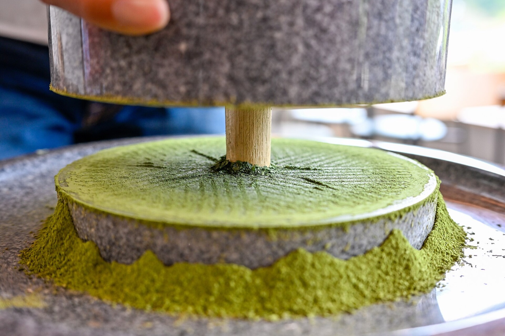

抹茶の原料は、粉砕用につくられる葉茶碾茶（てん茶）です。以下は日本の伝統的な製法の一般的な説明であり、特定の製品についての説明ではありません。
1. 被覆
日本の表示基準では、碾茶は摘採前の2〜3週間、よしず、こも、寒冷紗などで覆った茶畑の葉からつくられます。この被覆栽培は16世紀後半に日本で発展しました。日光を遮ると葉緑素が増え、アミノ酸が保たれるため、抹茶特有の深い緑色とうま味が生まれます。
2. 摘採と蒸し
春に摘んだ葉を約15秒蒸して酸化を止め、広げて冷まします。
3. 揉まずに乾燥
煎茶などの緑茶は葉を揉んでつくりますが、碾茶は揉みません。一般に多段コンベヤの碾茶炉で、広げたまま乾燥させます。
4. 茎と葉脈の除去
乾燥した葉から茎と葉脈を取り除き、柔らかい葉の部分だけを残します。
5. 粉砕
伝統的な石臼は毎分約53〜54回転で、1時間に約40gしか生産できません。摩擦熱で約50℃まで温まることで、抹茶の香りが引き立ちます。日本の基準では、石臼に準じる粉砕機も認められています。

参考資料
お店のドリンクでお試しください
サンプルのご請求、価格や包装単位のお問い合わせはこちらから。